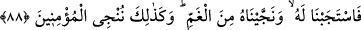

Ne de dalavere bayrağı açtı
Baklî (k.s.)’un Arâis’inde şöyle der: “Allah Teâlâ, Yûnus (a.s.)’a balığın karnında bir
mi‘rac ve müşâhede murâd etti. Emir ve yasakların sebeplerini ortaya koydu. Bundan
maksad da Hakk’a yakınlık ve müşâhede idi. Muhammed (a.s.)’ın arşın üstünde
gördüklerini Hak Teâlâ ona balığın karnında karanlıklar içinde gösterdi. Yunus (a.s.)
Hakk’ı görünce hayrete düştü ve şöyle dedi: “Senden başka hiçbir ilah yoktur. Seni
tenzih ederim. Gerçekten ben zâlimlerden oldum!” Seni, hakkında düşündüğüm gibi
olmandan tenzîh ederim. Sen, hâdis varlıkların zanlarının ve vehimlerinin hilâfınasın.
“Gerçekten ben” senin celâlini vasfetmek konusunda “zâlimlerden oldum.” Çünkü
benim seni vasfetmem, senin vahdâniyyetinin izzetine lâyık/uygun değildir.
Yûnus (a.s.)’ın bu bözü Peygamberlerin Efendisi’nin (s.a.) şu sözüne denk
düşmektedir: “Seni gereği gibi senâ edip övmeye güç yetiremem. Sen kendini nasıl
senâ ettinse öylesin.”[210]
Nebî (a.s.): “Beni, kardeşim Yûnus’dan üstün tutmayınız.” [211] buyurmuştur. Çünkü
Yunus (a.s.), gördüğünü gördüğü vakit bulunduğu yeri beğendi. Dünyada idrak ettiğini
daha sonra idrak edemeyeceğini zannetti. Bunun üzerine Hak ondan gâib oldu. O da
buna üzüldü ve kurtulmak için duâ etti. Allah da onu balığın karnındaki yalnızlığından
kurtardı.
88. Bunun üzerine onun duâsını kabul ettik ve onu kederden kurtardık. İşte biz
müminleri böyle kurtarırız.
“Bunun üzerine” en latîf ve güçlü bir şekilde hatâsını îtirafı zımnında “onun duâsını
kabul ettik.” Burada işâret vardır ki Allah Teâlâ Yûnus (a.s.)’ın duâsına icâbet ederek
onu, cisimler âleminin karanlıklarından kurtardığı gibi; ilâhî inâyete mazhar olan
mü’minin rûhunu da beden, nefis ve dünya karanlıklarından kurtarır. Böylece mü’minin
ruhu, ruhlar âleminin nurları içinde Allah’ı zikrettiği gibi cesedler âleminin
karanlıklarında vahdâniyyet sıfatı ile O’nu anar. O’nun halîfesi sıfatıyla gayb ve şehâdet
âleminde tasarruf eder. Nitekim et-Te’vîlâtü’n-Necmiyye’de böyle geçmektedir.
Bir hadiste şöyle buyrulmuştur: “Üzgün/kederli olup da bu duâyı (Lâ ilâhe illâ ente
sübhâneke innî küntü mine’z-zâlimîn) yapan kimsenin mutlaka duâsı kabûl
olunur.”[212]
Hasan Basrî (r.h.)’ın şöyle dediği nakledilmiştir: “Allah’a yemin olsun, Yûnus
(a.s.)’ı ancak nefsine zulmettiğini îtiraf etmesi kurtarmıştır.”
el-Müstedrek’te nakledilen bir hadiste Nebî (a.s.) şöyle buyurmuştur: “Kendisiyle
duâ edildiği zaman Allah’ın kabul ettiği ve kendisiyle istendiği zaman Allah’ın